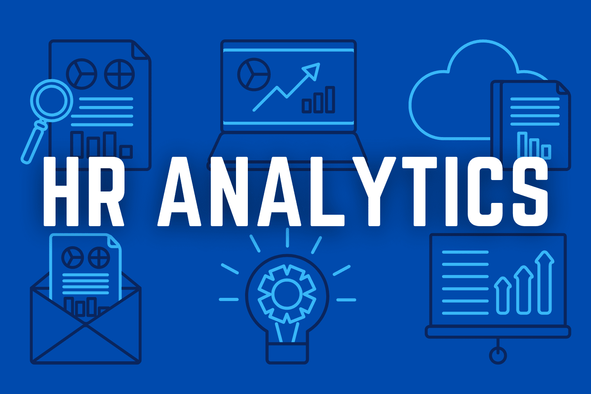

Exploratory Data Analysis of player demographics, positions, goal-scoring, nationality, and league-level
trends across Europe's top five football leagues — Premier League, La Liga, Bundesliga, Serie A, and Ligue 1.


Explore the financial and audience-reception metrics of the Movie Industry dataset to identify which features (budget, votes, score, etc.) correlate most strongly with box office revenue, and to surface key facts about the highest-performing movies, studios, and actors in the dataset.

The goal of this project is to analyze customer behavior and sales performance for an e-commerce platform. Using user event log data, this analysis evaluates the sales funnel, identifies where users drop off, and highlights the most profitable traffic sources and products to drive strategic business decisions..

DataSearch is a dynamic Power BI business intelligence solution designed to track, analyze, and uncover macroeconomic trends within the data science and tech employment sectors from 2017 through 2021.
HealthStat is an advanced Power BI dashboard designed to analyze and benchmark Elective Hip Replacement Surgical Inpatient Stays across New York State.
The project focuses on optimizing healthcare delivery by evaluating two critical hospital performance metrics: Length of Stay (LOS) and Average Cost Per Discharge.

A multi-page Power BI dashboard analyzing workforce data for a fictional company, Atlas Labs — covering employee overview, demographics, individual performance tracking, and attrition drivers.

Donec eget ex magna. Interdum et malesuada fames ac ante ipsum primis in faucibus. Pellentesque venenatis dolor imperdiet dolor mattis sagittis magna etiam.